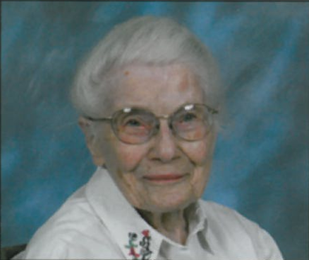
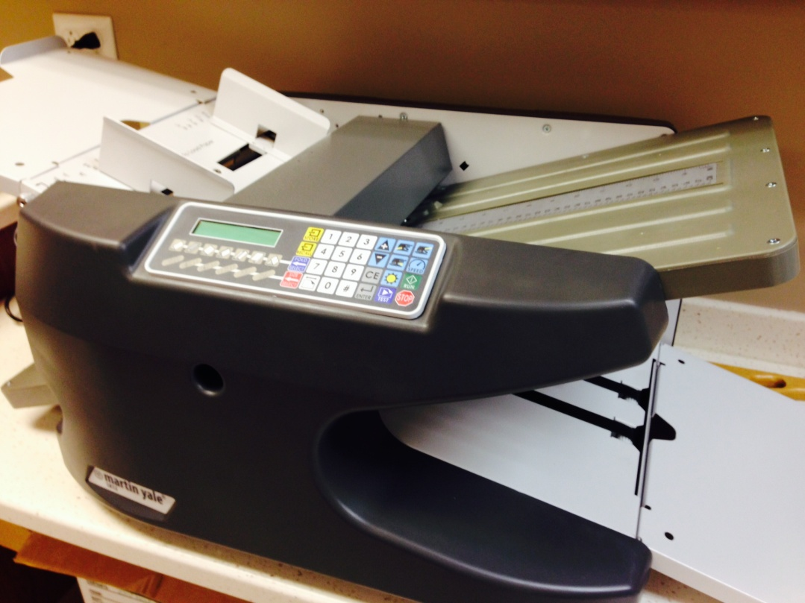
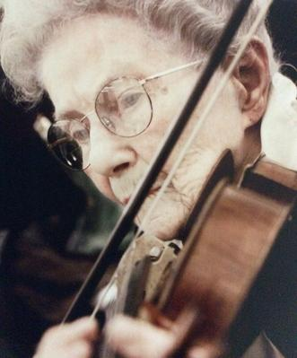

Loraine E. Edwards
May 18, 1907 to May 16, 2014
Relationship to St. Andrew United Methodist Church:
Loraine was the oldest member of St. Andrew when she passed away. She had attended regularly since the 1970s and contributed in different ways over the years. One of her major interests was education and she worked with the education committee for many years. When she came to Lafayette to work at Purdue she and her friend, Margaret Stoyer, purchased a home on Salisbury Street. This allowed them to walk to church as well as to the University where they both worked. Loraine was a very active member of Marion Baumgardner’s Sunday morning Bible study class and talked about it often. She also supported the music program by playing in ensembles. After Loraine retired from Purdue she volunteered in the church office one day a week to help fold and collate the bulletins. She continued to do this for over 40 years until the year before her death. In addition to her office service Lorraine showed her devotion to SAUMC and the Lafayette community by establishing two funds. The first was the Good Samaritan fund which provided support for community members in need without describing these needs. The second was a scholarship fund which provided student support that added school expenses other than tuition and books not covered by most scholarships.
Family:
Loraine never married. She and Margaret Stoyer met while Lorraine was teaching at St. Olaf College in Northfield, MN and they established a joint residence. They stayed together during moves from St Olaf to Berea College in Kentucky followed by a move Ohio State. Finally they came to Purdue and West Lafayette where Margaret passed away in 1981.
Loraine grew up in Findlay, Ohio where her father owned a bakery. She often talked about sitting in the corner of the shop watching the bakers work and hoping for a cookie, which she received if she was a good girl. Her parents, Frank and Grace Edwards, and a brother, Carmen H. Edwards preceded her in death. Her closest living relatives were great nieces and nephews who lived in Virginia. They kept in touch with her and worked with Westminster Village to provide good care in her last years. Her St. Andrew “daughter” was Margie Sharples who visited her regularly and kept her involved as long as possible.
Recognitions, Activities, Special Interests:
Music was Loraine’s love and life. She played the viola and violin and taught music in public schools and in universities. She played in orchestra and ensembles until she was in her 90s. She was a great example of how a person can enjoy and share music all of one’s life. Loraine was also a very hospitable person and enjoyed sharing her home with visiting musicians and friends.
Use of Memorial Funds: A modern folding machine was purchased in recognition of Loraine's over 40 years of service manually folding the Sunday bulletins.

Obituary published in the Journal & Courier
Dr. Loraine E. Edwards, 106
Dr.
Loraine E. Edwards, 106, of West Lafayette, formerly of Columbus, OH, passed
away at 4:30 a.m. on Friday, May 16, 2014 at Westminster Village. Born May 18,
1907 in Wellston, OH, she was the daughter of the late Frank W. and Grace
(Harper) Edwards. She was a member of St. Andrew's United Methodist Church.
Loraine was a 1925 graduate of Central High School in Findlay,
OH. She earned her Bachelor's degree in 1930 from Oberlin College, her Master's
degree from New York
University in 1945, her PhD from Ohio State
University in 1960, and did her Post Doctoral work at Liszt Academy in
Budapest, Hungary in 1979. Loraine was a music supervisor for the Ohio Public
Schools, St. O Lafayette College, Berea College and Ohio State University. She
last taught at Purdue University.
She was a member of the Christiansen Choral Workshop.
Music was not only her love but her life. Loraine played violin and viola in
Jr. High and High School. She continued playing with the Findlay College
Orchestra, Oberlin College Symphony, St. O Lafayette Symphony, Berea College
Symphony, Ohio State Symphony, Lafayette Symphony, Wabash Chamber Orchestra,
Danville (IL) Orchestra, and church ensembles. She was a member of Delta Kappa
Gamma, West Lafayette Musicale, and OES Chapter #23 in Findlay, OH.
She loved to travel the world and meet new people, however, it was her 30 year
friendship with Dr. Laci Pinter of Hungary that she treasured the most.
She was preceded in death by a brother, Carmen H. Edwards, and nephews, David
A. Edwards and Robert A. Edwards. Left to cherish her memory are David's wife,
Abbie Edwards; a great niece, Julie Edwards, and great-nephews and their wives,
Robert & Stephanie, Brian & Michele, Marc & Tressa Edwards.
Great-great nieces and nephews, Jacqueline & her husband Kirk, Chelsea,
Carly, Isaac, Morgan, Hunter, Olivia and Saige and one great-great-great
nephew, Konner. Also, a dear friend in Mrs. Dorothy Van Cleef. The family would
like to thank the staffs of St. Elizabeth's Hospice and Westminster Village for
their amazing care during her twilight years.
A private burial to take place in Maple Grove Cemetery in Findlay, OH. A
memorial service will take place at St. Andrew United Methodist Church, West
Lafayette, IN at a later date. Hippensteel Funeral Home is entrusted with care.
Share memories and condolences online at www.hippensteelfuneralservice.com